GeoNode Guide¶
Creating Your Instance¶
Using the Kartoza GeoSpatialHosting Dashboard¶
After your service has finished setting up, you will be redirected to the Hosted Services page of the GeoSpatial Hosting Dashboard. Here, you can view all your purchased services.
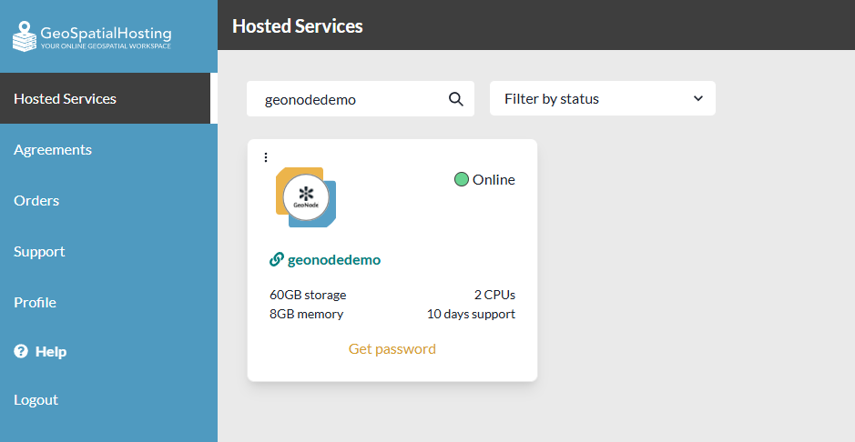
To access your login credentials:
- Click the Get Password button under your hosted service.
- Your credentials will be copied to your clipboard.
Hint: Paste and save your credentials in a secure location.
- Click the application name you selected for your GeoNode instance to open it.
To delete a hosted service:
- Click the 3 dots in the corner of the hosted service pane.
- From the dropdown menu, select Delete.
⚠️ IMPORTANT Deleting a hosted service is permanent. All associated data will be irreversibly removed with no option for recovery.
First Log In & Setting Your Password¶
Accessing the Homepage¶
You can reach the GeoNode homepage in two ways:
- Via direct URL
Open your browser and navigate to:
http://<geonode_application_name>.sta.do.kartoza.com/#/
- Via the GeoSpatial Hosting Dashboard
Click the application name you selected for your GeoNode instance.
Creating an Account¶
- On the GeoNode homepage, click Register.
- In the Sign Up form, enter your Username, Email, and Password.
- Click Sign Up. You will be redirected to the GeoNode homepage, logged in with your new account.
Setting Up Your Profile¶
- In the top navigation bar, click the Avatar icon → Profile.
- On your profile page, click Edit Profile.
-
On Edit Your Profile, you can update:
-
Name & Surname
- Organization
- Contact Information
- Profile Picture
- Click Update Profile to save your changes.
Quickstart: 5-Minute Tutorial¶
Overview¶
GeoNode is a powerful platform for the management and publication of geospatial data. It integrates mature, stable open-source software projects under a user-friendly interface.
With GeoNode's simplified architecture, non-specialized users can easily share geospatial data and create interactive maps without advanced GIS skills.
Geospatial Data Storage¶
GeoNode supports uploading vector and raster datasets through a simple web form. Supported vector formats include Shapefiles, GeoJSON, CSV, KML, and KMZ, while raster data like satellite imagery is stored as GeoTIFFs in their original projections.
| Feature | Vector Data | Raster Data |
|---|---|---|
| Formats | Shapefile, GeoJSON, CSV, KML, KMZ | GeoTIFF |
| Storage | Converted into geospatial database tables | Stored as GeoTIFF files |
| Examples | Roads, boundaries, facilities | Satellite imagery, aerial photos |
| Projection Handling | Preserved and reprojected for map display | Preserved in original projection |
| Use in Map Creation | Searchable, combinable with other layers | Searchable, visual backdrop for analysis |
GeoNode emphasizes the use of standard metadata formats, particularly ISO 19139:2007 / ISO 19115, ensuring proper cataloging and interoperability.
Immediately after uploading, users can fill in the resource metadata, making the dataset instantly available via CSW (OGC Catalogue Service) endpoints and APIs.
Users can also upload metadata XML files (ISO, FGDC, or Dublin Core formats) to auto-populate key metadata fields.
Additionally, GeoNode offers a web-based style editor that lets users customize layer symbology and preview changes in real time.
Data Mixing and Map Creation¶
Once datasets are uploaded, GeoNode allows users to:
- Search for data by location or keyword.
- Mix datasets and create interactive maps with ease.
All layers are automatically re-projected to Web Mercator, enabling seamless integration with popular basemaps like OpenStreetMap, Google Satellite, and Bing Maps.
Maps created in GeoNode can be:
- Embedded in other websites.
- Exported as PDFs for offline use or printing.
GeoNode as a Building Block¶
GeoNode’s modular, Django-based design makes it highly extendable. Many open-source projects build on GeoNode by reusing its components.
You can explore real-world implementations in the GeoNode Projects Gallery.
The GeoNode development community is active, welcoming, and highly supportive of new contributors, providing guidance and ideas to help newcomers get started.
Note: For more details, refer to the GeoNode Basics section of the official GeoNode documentation.
Data Preperation¶
Data Preperation Overview¶
This tutorial uses an extract of the Berlin city center buildings map from the BBBike OpenStreetMap extracts. Download the Tutorial Data using the link below:
Hint: You can also download your own custom spatial data from the BBBike Extract Service.
Uploading Datasets¶
Uploading Datasets Overview¶
In GeoNode, datasets are the core published resources that represent either raster or vector spatial data sources. Each dataset can also include metadata, user ratings, and comments. This makes them collaborative and easy to manage within the GeoNode environment.
You can upload datasets in two ways:
-
From the All Resources Page:
Click Add Resource and select Upload dataset from the list.
-
From the Datasets Page:
Click New and select Upload dataset from the dropdown.
Note: The default maximum upload size in GeoNode is 100 MB. Administrators can increase this limit in the admin panel. The maximum number of parallel uploads is 5. This setting can also be adjusted by an administrator.
Exercise¶
Follow these steps to upload your dataset to GeoNode:
-
On the GeoNode Homepage, click the Datasets tab.
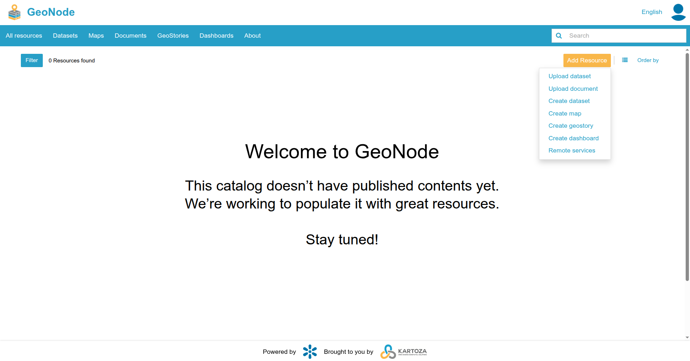Image credit: GeoNode -
Click New and select Upload dataset from the dropdown.
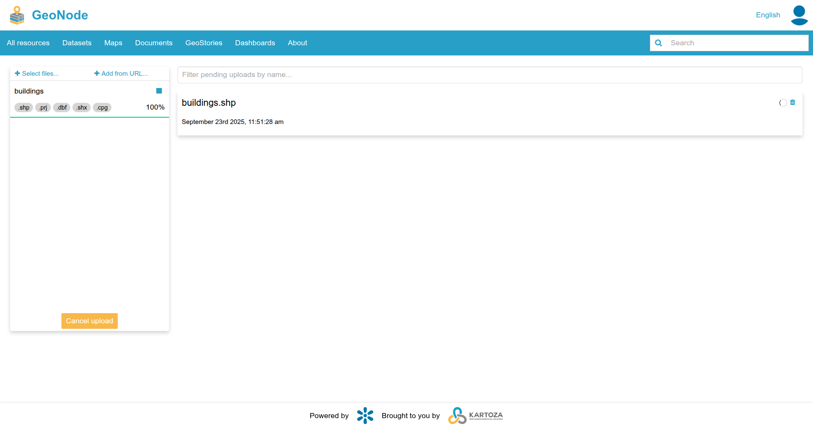Image credit: GeoNode -
From the Upload a Dataset page, click Select files... to choose spatial data files from your computer.
 Image credit: GeoNode
Image credit: GeoNode -
From your file explorer, select the file:
Tutorial_Berlin-shp.zip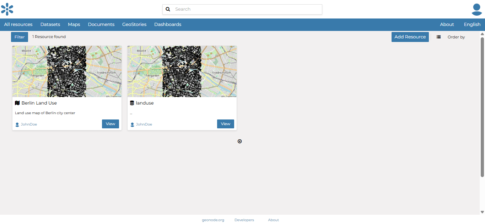Image credit: GeoNode -
Click Upload to begin the dataset upload process.
A progress bar will display the upload status and notify you when the upload is complete. When the upload finishes, click the View button to open your dataset.
Note: For more details, refer to the Managing Datasets section of the official GeoNode documentation.
Uploading Documents¶
Uploading Documents Overview¶
GeoNode allows users to share a wide variety of documents, such as:
| Document Type | Supported File Types |
|---|---|
| Reports | .doc, .docx, .txt, .odt |
| Conceptual Notes | .doc, .docx, .txt, .odt |
| Posters | .pdf, .jpg, .png, .tif, .tiff |
| Spreadsheets | .xls, .xlsx, .ods |
| Presentations | .ppt, .pptx, .odp |
| Images | .gif, .jpg, .png, .tif, .tiff |
| PDFs | |
| Zip Files | .rar, .zip, .gz |
| Styled Layer Descriptor (SLD) | .sld |
| Metadata Files | .xml, .qml |
| External URLs | Web resource links (no file extension) |
Note: Only authenticated (logged-in) users can upload documents to GeoNode.
You can upload documents in two ways:
-
From the All Resources Page:
Click Add Resource and select Upload document from the list.
-
From the Documents Page:
Click New.
Note: The default maximum upload size in GeoNode is 100 MB. Administrators can increase this limit in the admin panel. The maximum number of parallel uploads is 5. This setting can also be adjusted by an administrator.
Data Preperation Exercise¶
Follow these steps to upload your document to GeoNode:
-
On the GeoNode Homepage, click the Documents tab.
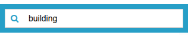Image credit: GeoNode -
Click the New button.
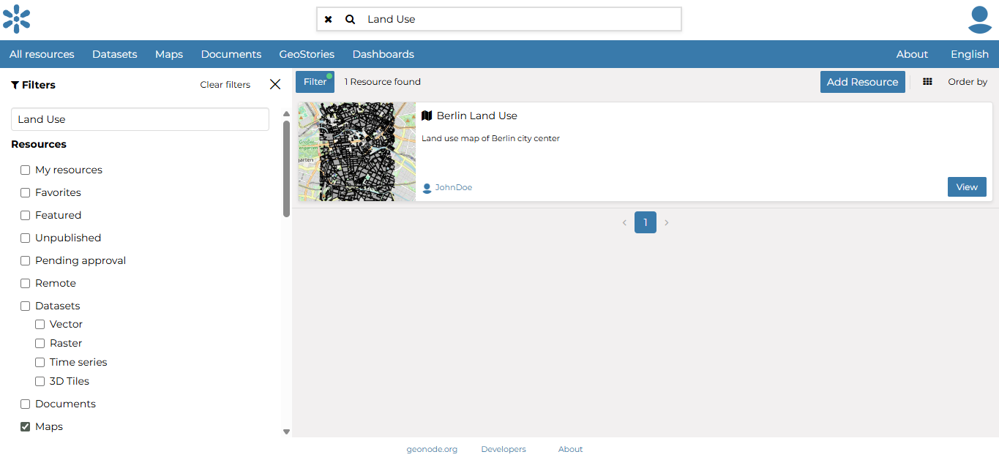Image credit: GeoNode -
The Document Upload page offers two ways to add documents to GeoNode:
- Upload from a local file
- Add a reference to an external URL
-
Click Select files... to choose data files from your computer.
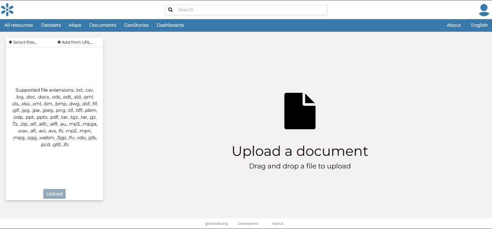Image credit: GeoNode -
From your file explorer, select the file:
README.txt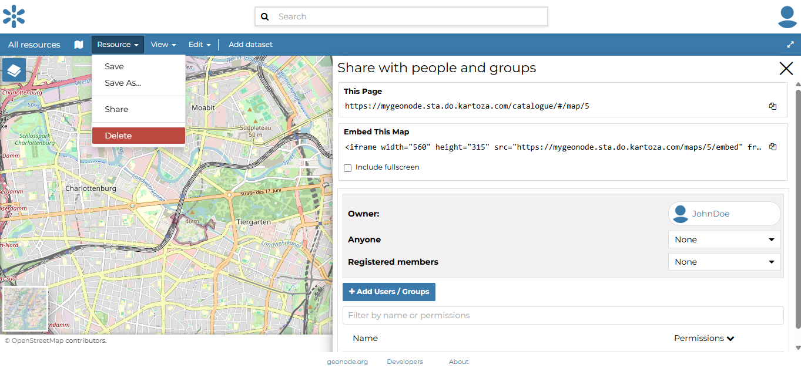Image credit: GeoNode -
Click Upload to begin the document upload process.
Once the upload is complete, click View to open the document’s detail page. Here you can see additional information, edit metadata, share the document, download the file, and delete the document.
Note: For more details, refer to the Managing Documents section of the official GeoNode documentation.
Creating a Map¶
Creating a Map Overview¶
Maps are collections of datasets displayed together on an interactive web map. These maps can be composed using the map composer and saved as GeoNode resources. Additionally, maps can be enriched with metadata, ratings, and user comments.
You can create map in three ways:
-
From the All Resources Page:
Click Add Resource and select Create map from the list.
-
From the Maps Page:
Click New.
-
From the Datasets Page:
Click View and select Create map.
When you create a new map, it will automatically open in the Map Viewer. In the upper left corner, you’ll find the TOC (Table of Contents) button. This opens the TOC panel, where you can manage all the datasets associated with the map.
Creating a Map Exercise¶
Follow these steps to create a map in GeoNode:
-
On the GeoNode Homepage, click the Maps tab.
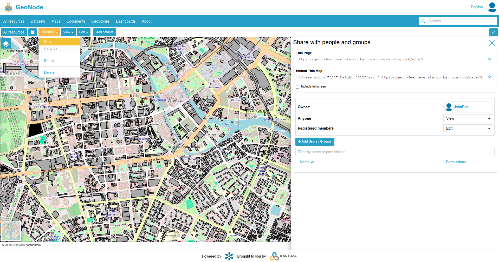Image credit: GeoNode -
Click the New button.
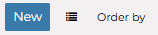Image credit: GeoNode -
In the Map Viewer, click Add Dataset from the top-navigation bar.
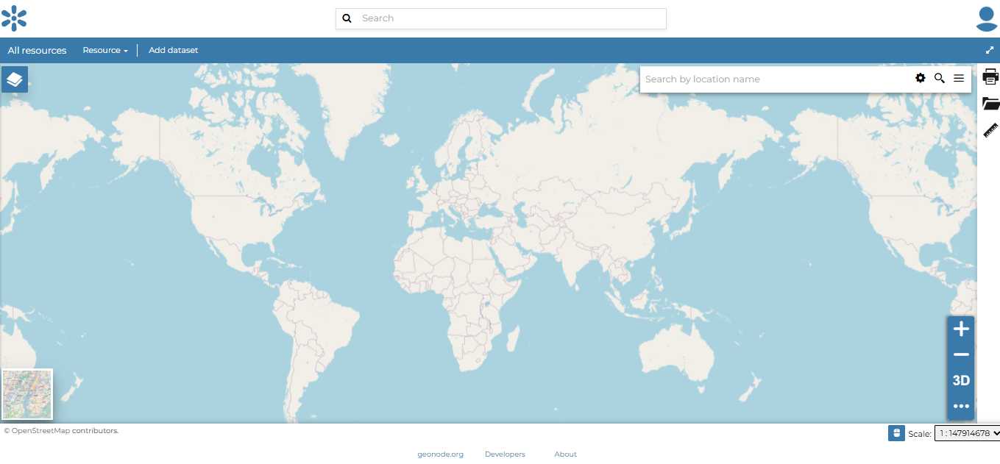Image credit: GeoNode -
In the Datasets Catalog pane, select your previously uploaded
buildingslayer.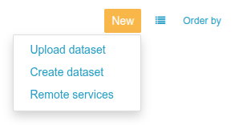Image credit: GeoNode -
Under the Resources link in the top-navigation toolbar, select Save As.
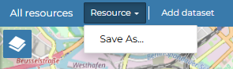Image credit: GeoNode -
In the Save pop-up, give your map a Title and Description
You should now see your map listed on the All Resources page.
Note: For more details, refer to the Managing Maps section of the official GeoNode documentation.
Sharing Resources¶
Sharing Resources Overview¶
GeoNode encourages users to publicly share and make information available for download on the platform. By default, resources are visible and accessible to everyone, but owners can restrict access to specific users or groups as needed.
For datasets, anyone can view them by default, but only the dataset owner can edit or manage them.
Map sharing offers more advanced permission control. Administrators can define who can perform specific actions on each map, while regular users can manage only the maps they own or those they have been authorized to manage.
From the Share Options Settings panel of each resource, the following sharing options are available:
| Permission | Document | Dataset | Map |
|---|---|---|---|
| None | The document is not visible to anyone. | Not applicable. | Not applicable. |
| View | View Metadata: Users can view the document’s metadata. | Users can view the dataset. | Users can view the map. |
| Download | View and Download: Users can view and download the document. | Users can view and download the dataset. | Users can view and download the map. |
| Edit | Users can modify the document’s metadata and attributes. | Users can modify the dataset’s metadata, attributes, feature properties, and style. | Users can modify the map’s metadata. |
| Manage | Users can update, delete, change share options, and publish/unpublish the document. | Users can update, delete, adjust sharing options, and publish/unpublish the dataset. | Users can update, delete, adjust sharing options, and publish/unpublish the map. |
Sharing Resources Exercise¶
Follow these steps to share you map:
-
On the All Resources page, click View under your
Berlin Buildingsmap.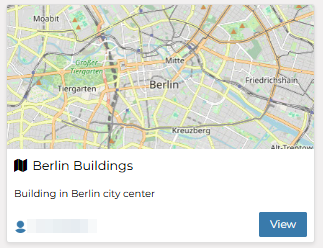Image credit: GeoNode -
In the top-navigation bar, under the Resource menu, select Share.
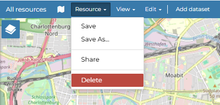Image credit: GeoNode -
The Share with people and groups page will open.
-
Update the following sharing permissions:
- Anyone:
View - Registered Members:
View
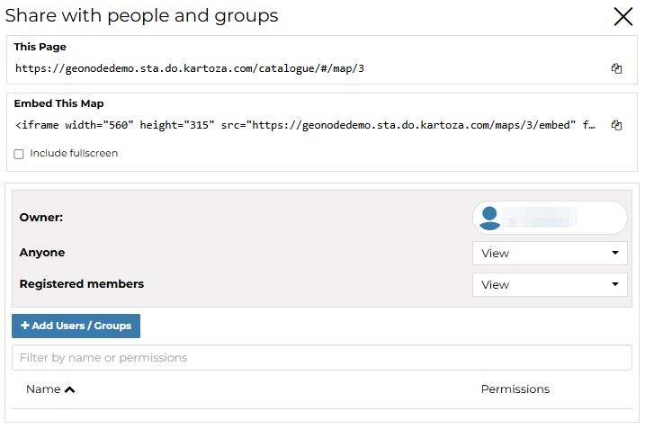Image credit: GeoNode - Anyone:
-
Under the Resources menu, select Save.
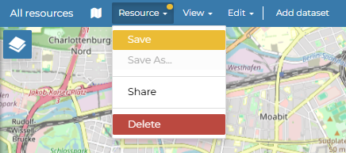Image credit: GeoNode
Your map is now public and can be viewed by anyone.
Note: For more details, refer to the Share Options pages of the Document, Dataset and Map sections of the official GeoNode documentation.
Finding Data¶
Finding Data Overview¶
It is possible to explore GeoNode to find datasets, maps, documents, and other resource types by using different navigation paths, filters, and search functions.
On every page, you’ll find a quick search tool. The Search box in the navigation bar allows you to type any text and quickly find all resources related to that text.
When you perform a search, GeoNode takes you to the Search page, which displays results across all resource types. The Search page offers powerful options for customizing your search and provides much more precise filtering.
You can search and filter data using the following criteria:
- Text
- Resource Types (datasets, maps, documents, etc.)
- Categories
- Keywords
- Owners
- Regions
- Groups
- Limitations on Public Access
- Date
- Spatial Extent
You can sort search results by:
- Most Recent
- Less Recent
- Name
- Popularity
Finding Data Exercise¶
Follow these steps to find specific data:
-
In the Search Box on the top navigation bar, type
buildings.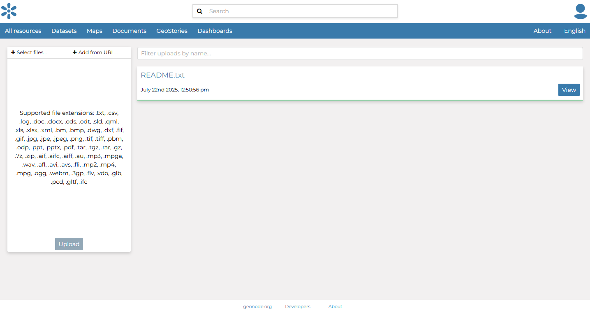Image credit: GeoNode -
The Search Page displays all resources related to your search.
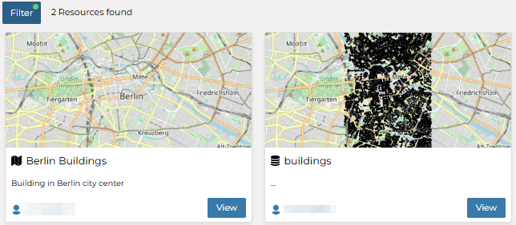Image credit: GeoNode -
Click the Filter button and select the checkbox next to Maps.
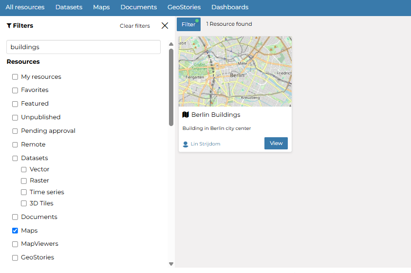Image credit: GeoNode
This allows you to filter the search results to display only maps, helping you refine your results to suit your needs.
Note: For more details, refer to the Finding Data section of the official GeoNode documentation.
Navigating the Dashboard¶
Home Page Layout¶
When you log in, GeoNode opens on the Home Page. The layout features:
- Top Navigation Bar – quick access to Datasets, Maps, Documents, Search, and your user menu.
- Resource Tiles – showcase the most recent or featured items.
- Search Box – global, full-text search across all resource types.
Top Navigation Bar¶
| Button | Purpose |
|---|---|
| Datasets | Browse, upload, or manage spatial datasets. |
| Maps | Create new maps or view existing ones. |
| Documents | Upload and manage supporting documents. |
| Search Box | Enter any keyword to jump straight to the Search page. |
| Avatar Menu | Access Profile, Admin (if permitted), and Logout. |
Quick Search¶
Type any text in the top-bar Search Box and press Enter to see results across all resource types.
Search Page Filters¶
On the Search page you can refine results using:
- Resource Types (datasets, maps, documents…)
- Categories, Keywords, Owners, Groups
- Date range
- Spatial Extent (drag a bounding box on the mini-map)
You can sort results by Most Recent, Name, or Popularity using the sort dropdown at the top right.
All Resources Page¶
Selecting any tab (Datasets, Maps, Documents) brings you to its All Resources view. Each entry has:
- Thumbnail preview
- Resource title and owner
- View button (opens detail page)
- More ⋮ menu for actions (Edit, Share, Delete – depending on permissions)
Resource Detail Pages¶
Click View on any item to open its detail page, where you can:
- Inspect metadata
- Preview the map or document
- Download (if allowed)
- Rate or comment
- Access Resource → Share to adjust permissions
Mastering these navigation tools lets you quickly locate, preview, and manage all content in your GeoNode portal.
Managing Users & Permissions¶
GeoNode uses a role-based permission system. Each resource (dataset, map, document, etc.) can be shared with:
- Anyone (public)
- Registered Members (all logged-in users)
- Specific users or groups
Four permission levels are available:
| Level | What it Allows |
|---|---|
| View | View metadata and preview the resource. |
| Download | View and download the file / layer. |
| Edit | Modify metadata, styles, and attributes (datasets) or map settings (maps). |
| Manage | Full control: update, delete, change share options, publish/unpublish. |
Tip: Documents have “None” (invisible) instead of “View” as their lowest level.
Opening the Share Panel¶
- Navigate to the resource’s detail page and click Resource → Share in the top toolbar.
Setting Permissions¶
- In Share with people and groups, choose the role for Anyone (public) and Registered Members.
- Use the Add people or groups box to grant specific roles to individual users or groups.
| Example Setting | Result |
|---|---|
| Anyone → View Registered Members → View |
Resource is publicly viewable; downloads require direct link or higher role. |
| Anyone → None Registered Members → View |
Resource is hidden from the public but visible to logged-in users. |
| Specific Group → Manage | Only members of that group can edit, delete, or republish the resource. |
Saving Changes¶
Click Resources → Save to apply the new permissions.
Note: Administrators can also manage users and groups globally via /admin → People and Groups, but day-to-day sharing is usually handled through each resource’s Share panel.
Mastering these controls lets you publish data widely while protecting sensitive layers and documents.
Integrating With Other Tools¶
GeoNode exposes all datasets through standard OGC services, so you can easily consume layers in desktop GIS software or embed them in web maps.
Consuming GeoNode WMS in QGIS¶
- Open QGIS and choose Layer → Add Layer → Add WMS/WMTS Layer…
- Click New, then enter:
Name:
GeoNode WMSURL:
http://<geonode_application_name>.sta.do.kartoza.com/geoserver/ows?service=WMS&version=1.3.0&request=GetCapabilities
- Click OK, then Connect.
- Select the layer you want (e.g.
tutorial:buildings) and click Add. - The layer appears in the QGIS map canvas.
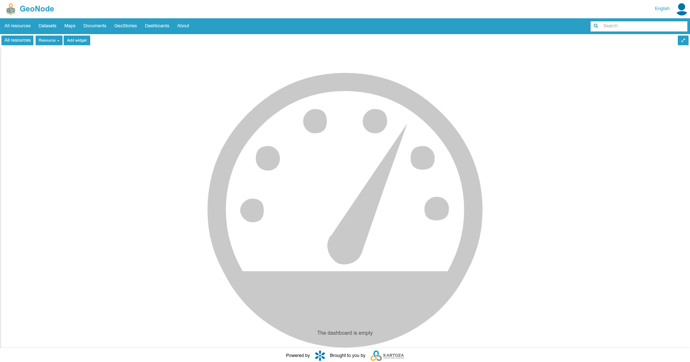 Image credit: User’s GeoNode instance
Embedding a GeoNode Layer in Leaflet¶
- Include Leaflet’s CSS and JS in your HTML
<head>:
<link rel="stylesheet" href="https://unpkg.com/leaflet/dist/leaflet.css"/>
<script src="https://unpkg.com/leaflet/dist/leaflet.js"></script>
- In your
<body>, add a map container:
- Initialise the map and add the WMS layer:
<script>
const map = L.map('map').setView([52.51, 13.40], 12); // Berlin centre
L.tileLayer.wms('http://<geonode_application_name>.sta.do.kartoza.com/geoserver/ows', {
layers: 'tutorial:buildings',
format: 'image/png',
transparent: true,
attribution: '© GeoNode'
}).addTo(map);
</script>
- Open the HTML file in a browser to see the GeoNode layer displayed via Leaflet.
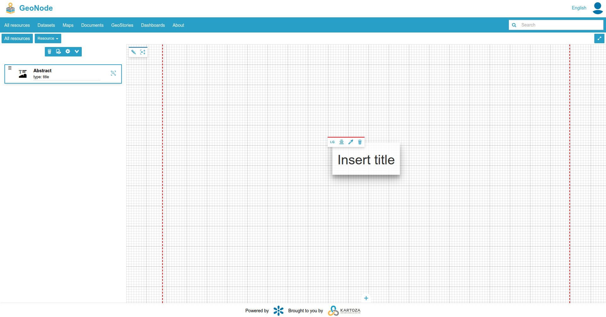 Image credit: User’s web application
Accessing GeoNode WFS¶
To retrieve raw feature data (GeoJSON, GML) use WFS:
http://<geonode_application_name>.sta.do.kartoza.com/geoserver/ows?service=WFS&version=2.0.0&request=GetFeature&typeName=tutorial:buildings&outputFormat=application/json
Paste this endpoint into tools such as curl, Postman, or any web-mapping library that supports WFS.
GeoNode’s standards-compliant services make it straightforward to integrate with any desktop GIS, web-mapping framework, or data-analysis pipeline that speaks WMS, WFS, or WCS.
Glossary of Terms¶
-
Bounding Box The minimum rectangle (min X, min Y, max X, max Y) that fully encloses a dataset’s spatial extent.
-
Dashboard A MapStore workspace that combines widgets (charts, tables, counters, maps, text) for interactive data exploration.
-
Dataset A single spatial layer (vector or raster) uploaded to GeoNode. Datasets are served via OGC services (WMS, WFS, WCS) and described by metadata.
-
Document A non-spatial file (reports, images, PDFs, spreadsheets, SLDs, etc.) stored in GeoNode and linked to projects or datasets.
-
GeoStory A MapStore storytelling tool that mixes text, multimedia, and interactive maps into a scrollable narrative.
-
Group A collection of users. Groups can be granted view/edit/manage permissions on resources.
-
Layer The renderable representation of a dataset inside GeoServer (raster or vector). In the GeoNode UI, “dataset” and “layer” are often used interchangeably.
-
Map A saved composition of one or more datasets displayed together in the Map Viewer. Maps can have their own metadata, sharing settings, and embed codes.
-
Map Viewer The interactive interface where users add layers, configure styles, and save maps.
-
OGC Services Standards used by GeoServer to publish data: WMS (maps), WFS (features), WCS (coverages), and CSW (catalog metadata).
-
Permission Levels
View,Download,Edit, andManage—define what actions users or groups can perform on a resource. -
Resource Generic term for any item managed by GeoNode—datasets, maps, documents, dashboards, or geostories.
-
SLD (Styled Layer Descriptor) XML standard for describing layer styling; used by GeoServer and editable within GeoNode.
-
Style An SLD or CSS definition that controls how a layer is drawn (colors, symbols, line width, opacity, etc.).
© 2025 Kartoza. Licensed under the GNU AGPL v3.